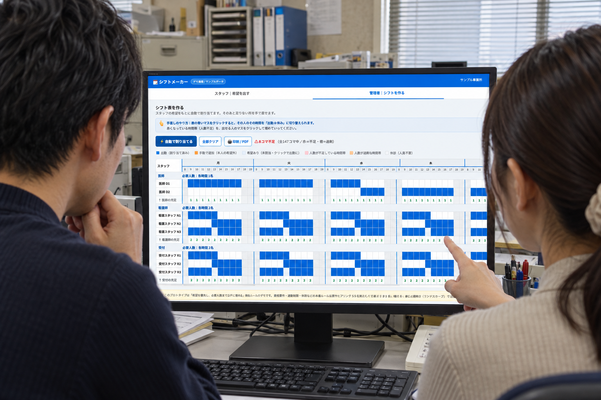

使う人と、進めたい仕事を整理します。
見た目の機能一覧だけでなく、誰が何を入力し、どこで確かめるかという実務の動きから考えます。
業務に合わせたアプリ制作
シフト作成アプリを制作し、動作する形に実装しています。現場で必要な手順を整理し、入力して確認するまでを、使う人の仕事に合わせて形にする取り組みです。回収と共有の自動化とともに、シフト業務を支える仕組みの一つとして紹介します。

情報を集める、内容を確認する、次の人へ渡す。実際の仕事には、使う人と現場ごとの手順があります。その順番が画面と合っていないと、別の表やメモで補う作業が生まれます。
シフト作成アプリの制作では、現場の手順を踏まえ、動く形として具体化することに取り組んでいます。
仕事を、どう整えたかをご紹介します。
見た目の機能一覧だけでなく、誰が何を入力し、どこで確かめるかという実務の動きから考えます。
現場の手順を踏まえ、シフト業務で使うアプリを、動作する形に実装しています。
回収と共有をつなぐ仕組みも含め、アプリを作ることが目的にならないよう、業務全体のつながりを重視します。
構築した仕組みと、支援で目指すことです。
シフト作成アプリを制作し、動作する状態にしています。
アプリと、回収や共有をつなぐ仕組みを、それぞれの役割から紹介しています。
現場の条件や入力内容を確認し、使い方を決める人の仕事を踏まえて、アプリの役割を考えます。
同じように負担がかかっている仕事を、お聞かせください。
業務改善について相談する